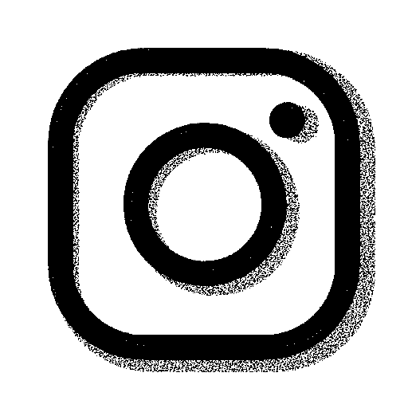

Dans le Moeraske, une réserve naturelle située au nord d’Evere, le long de la gare de Schaerbeek, se
trouve un banc au-dessus d’une colline, depuis lequel on peut légèrement voir l’Atomium, mais jamais
dans sa totalité.
Le site que j’ai réalisé, inspiré par le vrai site de l’Atomium, utilise le fait qu’on voit à peine le
monument pour en imaginer une version alternative. Toutes les photos de cette version, nommée l’Atonium,
sont générées par l’intelligence artificielle de Neural Blender.
Le site nous présente donc ce monument inexistant dont toutes les photos sont différentes. Et si l’on
essaye de prendre un ticket pour visiter l’Atonium, la page nous redirige vers une erreur 404, disant
que le monument n’existe pas.
A cela sont juxtaposés des bouts de la véritable histoire de l’Atomium, nous rappelant le statut
originellement éphémère de l’installation, et ses affaires de copyright.
Mon intention avec ce projet était de jouer sur cette vision incomplète de l’Atomium pour en créer une
nouvelle.
Est ce qu’un monument à moitié caché par les arbres peut en devenir un autre ?
Mon lieu se situant dans une réserve naturelle, j’ai eu l’idée de lier cela au thème des cryptides, ces
créatures surnaturelles généralement aperçues dans les forêts et réserves naturelles. J’ai donc imaginé
l’Atonium, une autre version surnaturelle de l’Atomium, semblant venir d’un univers parallèle et dont
toutes les photos seraient imprécises et différentes. Le monument qui, sur place, a l'air de se cacher
parmi les arbres, nous apparaît ici comme une créature paranormale.
Le site s’inspire en partie du site officiel de l’Atomium, mais c’est une version presque en noir en
blanc, les images sont en trames comme si elles avaient été imprimées puis scannées, et les liens ne
marchent pas.
Le texte qui s’y trouve nous raconte de véritables parties de l’histoire de l’Atomium. La page Histoire
nous explique que l’Atomium devait être une installation éphémère, tandis que la page Galerie nous
apprends qu’avant 2016, les photos de l’Atomium étaient soumises à un droit d’auteur, et qu’un
politicien avait invité les gens à partager des photos de l’Atomium censurée pour protester.
J’ai choisi ces deux éléments car le premier fait référence à une éventuelle destruction de l’Atomium,
et l’autre à une censure de ses images. Ils nous ramènent donc tous les deux vers le sujet originel de
ce projet, un lieu où il est difficile de voir l’Atomium, où son existence est incertaine, dissimulée.
Mettre ces éléments sur le site permettait aussi de créer une atmosphère douteuse et confuse.
Un sticker du QR code menant au site est placé sur le banc depuis lequel on peut apercevoir l’Atomium.
Sous le QR code, on peut y lire: “Du mal à voir l’Atonium?” “Scanne moi”. En scannant ce lien, on est
donc mis face à cette autre Atomium, alors que la vraie nous apparaît à peine à travers les arbres.
J'aimerais qu’on puisse se demander, en voyant la première image du site, si c’est bien à ça que
ressemble le monument.
Comme je l’ai mentionné plus tôt, mon site s’inspire de celui de l’Atomium. Mais son style en noir et
blanc, est inspirée avant tout par
My Boyfriend Came Back From the War de Olia Lialina. Les
images très
contrastées et les couleurs minimalistes de son site m’ont donné envie de faire de même avec le mien.
J’ai de plus repris sur certaines de mes pages le fonctionnement de ses poèmes, où il faut cliquer sur
des liens pour avancer.
J’ai ajouté à mes images des trames pour rappeler les photos floues de cryptides ou d’ovnis imprimées
dans un journal. Ce thème s’est aussi renforcé lorsque je suis tombé sur
What to Do if you See
A, un
poème collage fait par l’utilisateur @Bhramarii sur tumblr à partir de texte trouvé sur le site des
parcs nationaux des Etats-Unis. Son poème mêle des indications données aux visiteurs des parcs, à des
images de créatures non identifiées, donnant parfois l’impression d’un guide pour interagir avec le
fantastique.
///bise.flore.marteler -
Retour au site
